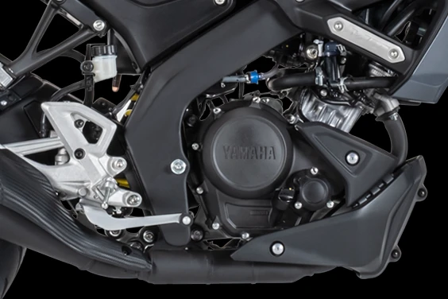
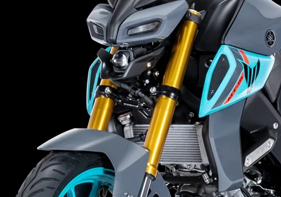
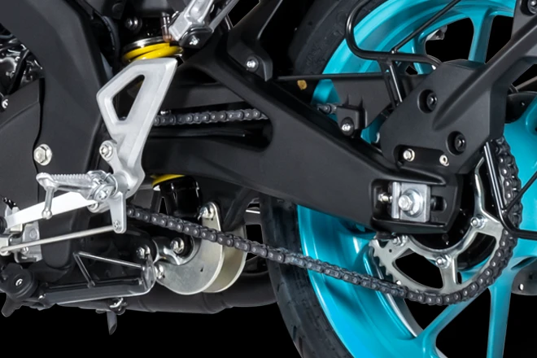

Introducing MT-15 Ver 2.0 Tame The Darkness
Carrying the legacy of MT series, the new MT-15 Ver 2.0 brings more aggression and agility now with Traction Control System, Dual Channel ABS, Upside Down front forks, Aluminium Swingarm, 155cc LC 4V FI engine and other exciting features. Stay connected with your Dark Warrior through Y-Connect even on the move.

LC 4V FI Engine
Powering the MT-15 ver 2.0 is the trusted and amazing 155cc Liquid cooled 4-valve engine that gives you ample amount of power and torque on tap.

Upside Down Front Forks
The structure of the Upside Down front forks allows front wheel ample room for free movement, which makes it easier for the bike to navigate and change directions at higher speeds, making it more agile, true to the character of MT-15.

Aluminium Swingarm
Equipped with Aluminium Swingarm, MT-15 Ver 2.0 zooms through any terrain with utmost ease. It provides sportier and stable handling due to excellent rigidity balance.